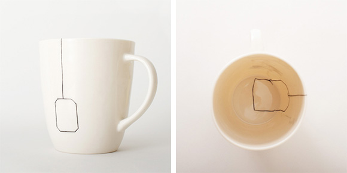
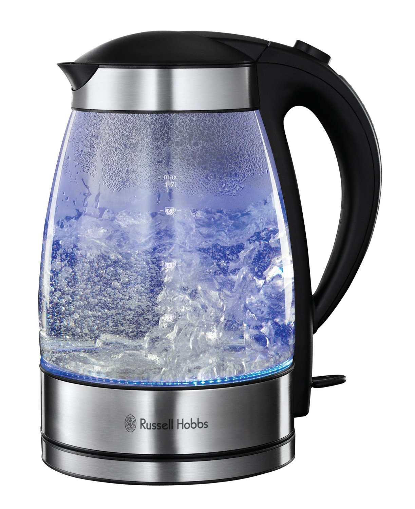

accessibility unit testing for developers
(and not only)
#A11yTO: Toronto Accessibility & Inclusive Design Meetup
Aidan Tierney @AidanA11y
Alicia Jarvis @AJarvis728
John McNabb @JohnKMcNabb
How to make a cup of tea
An non-techie example to get us started
Boil water (easy)
Just do it
Boil water (hard)
Electric, digital, stovetop, whistling, chiming, clicking

In the end, it's about the tea not the kettle
Different technology, different techniques
Basics skills are needed, but the tea is what matters
Accessibility in Test Driven and Behaviour Driven Development
Create accessibility tests (or scenarios, specifications) before we build
- These will drive what we build
- Pass/fail. Very specific
- Collaboration between developers and accessibility specialists
- Level of detail may differ for:
- Native HTML / Standard OS UI controls
- Custom widgets and controls
Developer accessibility checks
Automated syntax checking
Executes within seconds. Integrates accessibility testing into existing functional tests.
We can leverage work of others - we may need to select, customize or extend tests.
Manual checks and inspection
Keyboard. Inspection tools to quickly reveal accessibility information.
Assistive Technology
Screen readers, Zoom, Switch, Voice input.
Automated syntax checking
Tenon
- tenon.io
- Integrates with: Gulp, Grunt, Node, Protractor, Ruby, WordPress, Visual Studio, browser plugins for Chrome, Firefox
aXe
Automated syntax checking - more
AMP
Chrome Accessibility Developer Tools
WAVE
Check out Tenon & aXe using the before & after demos
Workshop activity
- Get the Chrome Extensions:
Tenon Check Chrome Extension
aXe Chrome Extension from Deque - Try them out on these pages: w3.org/WAI/demos/bad/
Next steps
Integrate and automate into your workflow:
Gulp, Grunt, Node, Protractor, Ruby, WordPress, Visual Studio, Karma, QUnit, Jasmine, Mocha, R-Spec, Cucumber, Selenium
Semantics & behaviour
HTML elements
HTML conveys meaning, rather than presentation. Elements, attributes, and attribute values in HTML are defined to have certain meanings (semantics). For example, theolelement represents an ordered list, and thelangattribute represents the language of the content.
w3c.github.io/html/dom.html#elements-semantics
iOS UI Accessibility
Label, Trait, Hint, Value
Manual inspection tools
Inspection Tools
- Accessibility Inspector: Debug Accessibility in iOS Simulator
developer.apple.com - aViewer (Windows): displays the accessibility API information (MSAA, IAccessible2, UI Automation, ARIA, HTML DOM) exposed by web browsers to the operating system, and thus to any assistive technology
paciellogroup.com/resources/aviewer/ - Browser extensions and toolbars
Manual checks for behaviour
Keyboard
- Ensure that all content can be accessed with the keyboard alone.
- Ensure all interactions are predictable. This requires an understanding of common keyboard interactions.
- webaim.org/techniques/keyboard/
A basic HTML dropdown
The select element has built-in keyboard support
- tab control receives focus (and shift + tab in reverse)
- Visible focus indicator
- spacebar - expand (also alt + ↑ ↓ )
- ↑ ↓ - navigate between menu options
- Visible indicator as move between options
- spacebar confirms selection (enter on MAC)
- Pressing any letter key (e.g. g) jumps to an option if it begins with that letter - behaviour varies by browser
Note: Many of these key interactions would have different behaviour if the select did not have focus. E.g. spacebar or ↓ would move you down the screen.
select examples
Go to demo
WAI-ARIA
WAI-ARIA describes how to add semantics and other metadata to HTML content in order to make user interface controls and dynamic content more accessible.
ARIA does not magically make any element act differently to what it is
What ARIA does not do and Just use a (native HTML) button
Custom dropdowns
jQuery and other custom elements
We need to define and support keyboard interactions
We can define interactions (and create simple pass/fail tests) before we build it
Prevent used key events from performing browser functions
jQuery example
When the menu is open, the following key commands are available:
- UP/LEFT: Move focus to the previous item.
- DOWN/RIGHT: Move focus to the next item.
- END/PAGE DOWN: Move focus to the last item.
- HOME/PAGE UP: Move focus to the first item.
- ESCAPE: Close the menu.
- ENTER/SPACE: Select the currently focused item and close the menu.
- ALT/OPTION + UP/DOWN: Toggle the visibility of the menu.
When the menu is closed, the following key commands are available:
- UP/LEFT: Select the previous item.
- DOWN/RIGHT: Select the next item.
- END/PAGE DOWN: Select the last item.
- HOME/PAGE UP: Select the first item.
- ALT/OPTION + UP/DOWN: Toggle the visibility of the menu.
- SPACE: Open the menu.
Keyboard test for a Modal
Workshop activity
Define the keyboard tests, scenario for a modal
dequeuniversity.com/library/aria/popups-dialogs/sf-modal-dialog
Keyboard navigation resources
ARIA: Providing Keyboard Navigation for Widgets
w3.org/TR/wai-aria-practices/#kbd_generalnav
Keyboard-navigable JavaScript widgets
developer.mozilla.org/en-US/docs/Web/Accessibility/Keyboard-navigable_JavaScript_widgets
Testing with Assistive Technology: Screen readers
Resources
- Notes on Using ARIA in HTML w3.org/TR/aria-in-html/
- WAI-ARIA 1.0 User Agent Implementation Guide w3.org/WAI/PF/aria-implementation/
- Android Accessibility Testing Checklist developer.android.com/training/accessibility/testing.html
- Verifying App Accessibility on iOS
- iOS Accessibility WWDC 2015 video developer.apple.com/videos/play/wwdc2015-201/
- NVDA nvaccess.org/download/
- AccesSlide - accessible HTML presentation framework github.com/access42/AccesSlide
Workshop time! Meet others & explore together.
Syntax checking: Tenon & aXe
Keyboard
Define 3 keyboard tests before testing a modal.
dequeuniversity.com/library/aria/popups-dialogs/sf-modal-dialog
Screen reader (NVDA, VoiceOver, TalkBack etc)
Define 3 tests before testing a small unit from w3.org/WAI/demos/bad/
Thats all from us!
#A11yTO: Toronto Accessibility & Inclusive Design Meetup
- Aidan Tierney @AidanA11y
- Alicia Jarvis @AJarvis728
- John McNabb @JohnKMcNabb